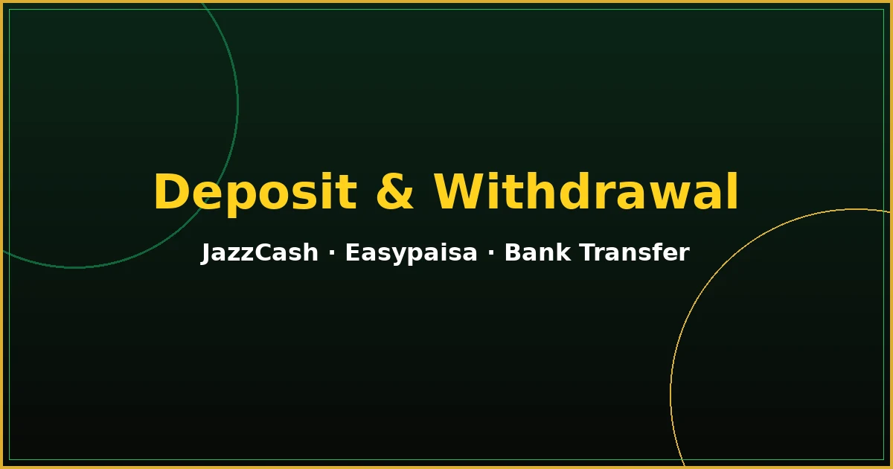

PKR Game Deposit and Withdrawal Guide
Learn how PKR Game Deposit and Withdrawal workflows typically operate for Pakistani users, including JazzCash, Easypaisa, bank transfer overviews, verification notes, pending statuses, and practical safety checks.

Payment Methods Overview
Most users in Pakistan look for wallet and banking options that already fit daily money habits. JazzCash and Easypaisa are frequently discussed because they are widely available on mobile phones, while bank transfer remains useful for players who prefer account-to-account movement. Exact channel availability depends on the live wallet screen inside your profile.
This combined page covers both adding funds and cashing out so you can compare requirements in one place. Jump to deposit help or withdrawal help when you already know which section you need.
Requirements Before Making a Transaction
- Sign in to the correct account before sending or requesting money. Use the account access guide if login fails.
- Confirm the payment method shown in your wallet is currently active.
- Prepare accurate wallet numbers or bank details that belong to you.
- Keep transaction references until balances update.
- Use only money you can afford to lose.
If you still need the mobile app installed, complete setup through the download and install guide before handling payments on a shared or temporary browser session.
Deposit Guide Introduction
PKR Game deposit topics below explain how to add money carefully without promising fixed limits, instant credit, or guaranteed bonus outcomes.
A deposit is a transfer from your personal JazzCash, Easypaisa, or bank channel into the platform wallet linked to your account. Successful deposits depend on accurate details, an active payment route, and confirmation from the payment channel. Always verify the amount and destination before confirming.
General Deposit Steps
- Sign in and open the wallet or deposit area of your account.
- Select an available payment method such as JazzCash, Easypaisa, or bank transfer.
- Enter the amount you intend to add and review any on-screen notices.
- Confirm the payment using your chosen channel’s authorization steps.
- Return to the platform wallet and wait for the balance update while keeping your reference ID.
JazzCash Deposit Guide
When JazzCash appears as an active option, choose it inside the deposit menu, follow the displayed instructions, and authorize the transfer in your JazzCash app or USSD flow as prompted. Double-check the mobile wallet number and amount. If the channel asks for a confirmation PIN or biometric approval, complete that step only on your own device.
Easypaisa Deposit Guide
Easypaisa deposits follow a similar pattern: select the method, enter the amount, and approve the payment through your Easypaisa account tools. Confirm that the wallet belongs to you and that network connectivity remains stable until the confirmation message appears. Do not close the authorization screen early.
Bank Transfer Deposit Overview
Bank transfer options may request account details or a guided transfer reference. Copy values carefully, send the exact amount from your own bank account when possible, and store the bank receipt. Name mismatches or missing references can delay reconciliation, so follow every field shown in the deposit form.
Deposit Limits and Fees
Deposit limits, fees, and available payment methods may vary according to the account, payment channel, platform policies, and current conditions. Confirm the latest details inside the account before making a payment.
Payment Verification
Some accounts may request additional verification before larger deposits are accepted or before related features unlock. Submit only genuine documents through official prompts. Verification protects account ownership and should never be handled through unofficial third parties.
Pending Deposit Problems
A pending status means the platform is still waiting for confirmation or review. Avoid sending a second deposit for the same amount immediately, because duplicate transfers can create harder reconciliation cases. Wait for the status to change, then contact support with your reference if the wait becomes unusually long.
Payment Not Reflected
If money left your JazzCash, Easypaisa, or bank account but the wallet balance did not change, collect the transaction ID, timestamp, amount, and method used. Recheck the wallet history, refresh the app, and open a support request with those details. Do not share OTPs or passwords while requesting help.
Withdrawal Guide Introduction
PKR Game withdrawal guidance focuses on accurate details, verification readiness, and realistic processing expectations.
A withdrawal moves available funds from your platform wallet to a personal JazzCash, Easypaisa, or bank destination you control. Requests can be reviewed before release. Processing times may depend on account verification, payment method, account status, platform policies, transaction volume, and the accuracy of submitted payment details.
Requirements Before Withdrawal
- Confirm you are signed into the correct profile.
- Check that your balance is withdrawable and not locked by active bonus conditions.
- Prepare destination details that match your identity where required.
- Review any pending account notices before submitting a request.
Account Verification
Withdrawal reviews may ask for identity or payment ownership checks. Completing verification early can reduce later delays. Provide clear information through official forms only, and keep copies of what you submit for your own records.
General Withdrawal Steps
- Open the withdrawal or cash-out section after signing in.
- Choose JazzCash, Easypaisa, or bank transfer if available.
- Enter the amount and destination details exactly as registered on your payment channel.
- Submit the request and save any confirmation or ticket number.
- Monitor status updates and wait for completion before changing destination details.
JazzCash Withdrawal Overview
For JazzCash cash-outs, enter the correct wallet number linked to you and confirm the amount carefully. Mismatched numbers are a common cause of rejected or delayed requests. After submission, watch the status panel instead of creating repeated requests for the same amount.
Easypaisa Withdrawal Overview
Easypaisa withdrawals follow the same accuracy principle. Use your own wallet credentials, verify digits before submitting, and keep the confirmation reference. If the channel is temporarily unavailable, wait for restoration rather than forcing an unsupported method.
Bank Transfer Withdrawal Overview
Bank withdrawals usually need accurate account title, account number, and bank selection fields. Small typing errors can send a request into review or rejection. Compare every character with your bank app before confirming.
Withdrawal Limits and Processing Status
Limits and timelines are controlled by live platform rules. Some requests move quickly, while others remain under review longer. No guide on this website can guarantee approval speed or final payment timing.
Pending Withdrawal Requests
Pending means the request is queued or under review. Changing destination details while a request is pending can create confusion, so wait for a final status when possible. Contact support with your request ID if the pending state continues beyond the period indicated in your account notices.
Rejected Withdrawal Requests
Rejections usually include a reason such as incorrect details, unfinished verification, or unmet bonus conditions. Read the reason fully, correct the issue, and submit a new request only after the account is ready. Repeated identical submissions without fixes rarely help.
Incorrect Payment Details
Always match withdrawal destinations to accounts you own. If you discover a typing error after submission, contact support promptly with the request ID and the corrected information. Prevention is easier than recovery, so review twice before sending.
Bonus and Wagering Conditions
Active promotions can temporarily affect withdrawable balances. Wagering requirements, eligible categories, and expiry windows differ by offer. Before requesting a cash-out, check whether bonus funds or related winnings are still restricted. Ignoring those conditions is a frequent reason withdrawals stay pending or get declined.
Promotions are optional. If the conditions are unclear, read the offer text again or ask support for clarification before depositing solely to unlock a reward.
Deposit and Withdrawal Safety Checklist
- Sign in yourself; do not hand account control to payment agents.
- Confirm method availability inside the wallet before transferring.
- Use personal JazzCash, Easypaisa, or bank details only.
- Save every transaction reference until the final status appears.
- Never share OTP codes to “speed up” deposits or withdrawals.
- Stop and review local rules if you are unsure about participation.
Frequently Asked Questions
Players in Pakistan commonly review JazzCash, Easypaisa, and bank transfer options. Availability can vary by account and platform policy, so confirm the methods shown in your wallet before paying.
Pending deposits can occur while the payment channel confirms the transfer, during peak processing periods, or when submitted details need review. Keep your transaction reference and wait for the status update before sending another payment.
Rejected withdrawals often relate to incorrect payment details, incomplete verification, insufficient withdrawable balance, or unmet bonus conditions. Correct the listed issue and submit a new request only after reviewing account notices.
No fixed limits are published on this informational page because amounts can change by account, channel, and platform rules. Check the live wallet screens for current minimums, maximums, and any fees.
Yes. Sign in to your own account first so deposits and withdrawals are linked to the correct profile. Use the login guide if you cannot access your account securely.
Final Call-to-Action
Use this PKR Game Deposit and Withdrawal page as your checklist for safer money movement. Confirm live methods in-account, keep references, verify details carefully, and treat every transaction as optional entertainment funding rather than a guaranteed return.